Figure 12.1: The queen of discrete movement models, the Correlated Random Walk, sketched lovingly at left from Kareiva and Shigesada (1983), based on no less lovingly following Pieris rapae - the cabbage white butterfly (at right) - flitting from flower to flower.
Goal: To understand and simulate discrete movement models including Random Walks, Autoregressive processes, Correlated Random Walks, and Multi-state Random Walks.
12.1 Introduction
Actual animal movements are invariably complex, but like any complex phenomenon, they can be thought of or reduced to some fundamental building blocks. The models are all essentially very simple, but we need to get used to the notation, the statistical properties, the very symbolic language of moving locations in space through time. To that end, we build the models hierarchically, across 1 and 2 dimensions, paying attention to the statistical properties and the parameterization of all the models, building up to the multi-state random walk - one of the real workhorses of movement analysis.
Note that notationally, we will use \(X_t\) as representing one-dimensional movement. The use of the subscript \(t\) is a clear indication that we are indexing out process in time, there is an implicit understanding that \(t \in \{0, 1, 2, 3\}\). For two-dimensional movement we will use \(\bf Z_t\), a vector containing two dimensions in \(X_t\) and \(Y_t\), or, more conveniently for many computations, as a complex number \(X_t + iY_t\).
As per usual, the emphasis is on the models - the mathematical formulations, and the statistical properties. Code can be revealed as needed. But all the basics to replicate the figures is provided here.
reveal code
# only package needed - for some circular statisticslibrary(circular)# The `scantrack` function will be helpful for visualizing movements # in X and Y and against Time. scantrack<-function(Z, cex=0.5, ...){layout(rbind(c(1,2),c(1,3)))plot(Z, type ="o", pch =19, cex =cex, xlab ="X", ylab ="Y", asp =1, ...)points(c(Z[1], Z[length(Z)]), pch =19, cex =2, col =c("green", "red"))plot(1:length(Z), Re(Z), type ="o", pch =19, cex =cex, xlab ="X", ylab ="Y", ...)plot(1:length(Z), Im(Z), type ="o", pch =19, cex =cex, xlab ="X", ylab ="Y", ...)}
12.2 Simple Gaussian Models
12.2.1 1D White Noise
The simplest movement model is white noise - what we might call \(WN(\sigma)\) - where each position is an independent draw from a normal distribution. We can notate that as:
\[\mathbf{X}_t \sim \sigma W_t\]
where \(W_t\) is true “white noise”, i.e. uncorrelated, independent, identical realizations of a standard normal distribution:
\[W_t \sim {\cal N}(0,1)\]
Very simple to generate:
reveal code
# Parameterssigma<-2n<-100# Simulate 1D white noiseX<-sigma*rnorm(n)# Visualizeplot(1:length(X), X, type ="o", xlab ="Time", ylab ="Position", main ="1D White Noise", pch =19, cex =0.5)abline(h =0, lty =2, col ="grey")
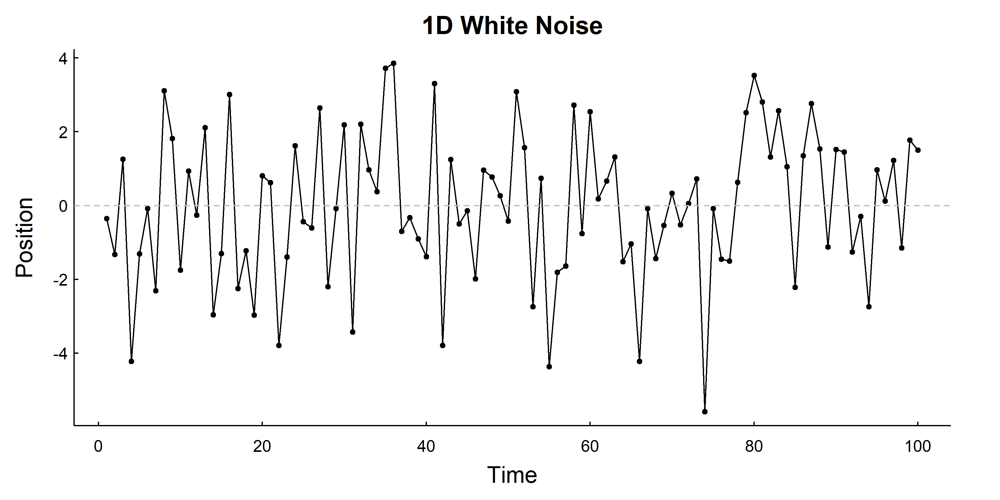
The properties of this model are very familiar, but we enumerate them as they are the same properties that we will be interested in comparing to more complex models. Thus:
The expected position (or mean) \(E(X_t) = 0\), i.e. is is centered at the origin1.
The variance is constant: \(\text{Var}(X_t) = \sigma^2\). In the context of movement, this means that it is spatially constrained, i.e. has a one-dimensional equivalent of a “home range”).
No autocorrelation: each position is completely independent
1 It is trivial to shift the mean of this (and all subsequent) models by simply adding that new mean, e.g. $X = WN() + .
2 I refuse to use the word “regression” for … reasons.
For ecologists, this process might be most familiar as the bahavior that is assumed behind the i.i.d. (independent and identically distributed) residuals of an ordinary linear model2.
Here’s is what a white noise process looks like:
reveal code
i<-1:20; n<-50X<-sapply(i, function(x)rnorm(n+1, sd =sigma))matplot(X, type ="l", lty =1, col =topo.colors(n), xlab ="Time", ylab ="Position", main ="White Noise")abline(h =c(-2*sigma, -sigma, 0, sigma, 2*sigma), lty =c(2,3,1,3,2), col ="black", lwd =c(1.5,3,1,3,1.5))legend("topleft", lwd =c(1.5,3), lty =c(2,3), legend =c("2 sd", "1 sd"))
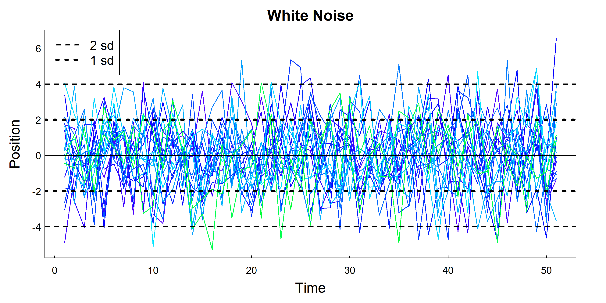
12.2.2 2D White Noise
Extending this to 2 dimensions is as simple as making X and Y each be a WN(\(\sigma\)) process. For convenience, we’ll use complex numbers, and the scantrack function to see how this process changes in time.
\[\mathbf{Z}_t \sim \mathcal{N}(0, \sigma^2)\]
reveal code
# Parameterssigma<-3n<-100# Simulate 2D white noise using complex numbersZ<-rnorm(n, sd =sigma)+1i*rnorm(n, sd =sigma)# Visualizescantrack(Z)title("2D White Noise", outer =TRUE)
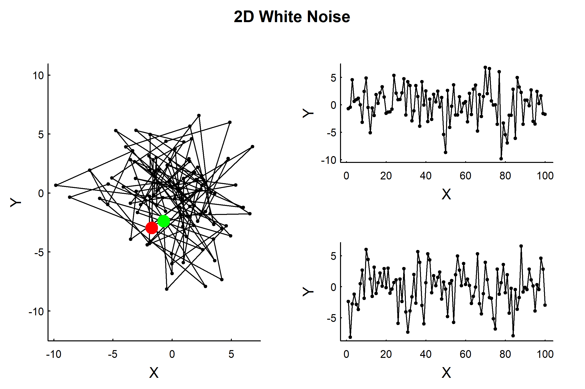
12.2.3 1D Random Walk
A random walk, in general, is a process where the location is a cumulative sum of a series of steps. The 1-dimensional random walk, where each step (not each location) is drawn from a normal distribution. \[X_t = X_{t-1} + \sigma W_t\]
where \(W_t \sim \mathcal{N}(0,1)\) is white noise and \(\sigma\) controls step size.
reveal code
# Parameterssigma<-2n<-100# Simulate 1D random walkX<-cumsum(rnorm(n, sd =sigma))# Visualizeplot(1:length(X), X, type ="o", xlab ="Time", main ="1D Random Walk", pch =19, cex =0.5)abline(h =0, lty =2, col ="grey")
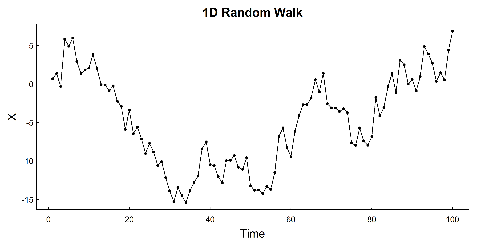
Properties: - Expected position: \(E(X_t) = 0\) (on average stays at origin) - Variance: \(\text{Var}(X_t) = \sigma^2 t\) (variance increases with time) - Unconstrained - will wander to infinity!
Here’s one way to visualize all the random walks, and how the standard deviation increases as the square root of time:
# Parameterssigma<-3n<-100# Simulate 2D random walk using complex numbersZ<-cumsum(rnorm(n, sd =sigma))+1i*cumsum(rnorm(n, sd =sigma))# Visualizescantrack(Z)title("2D Random Walk", outer =TRUE)
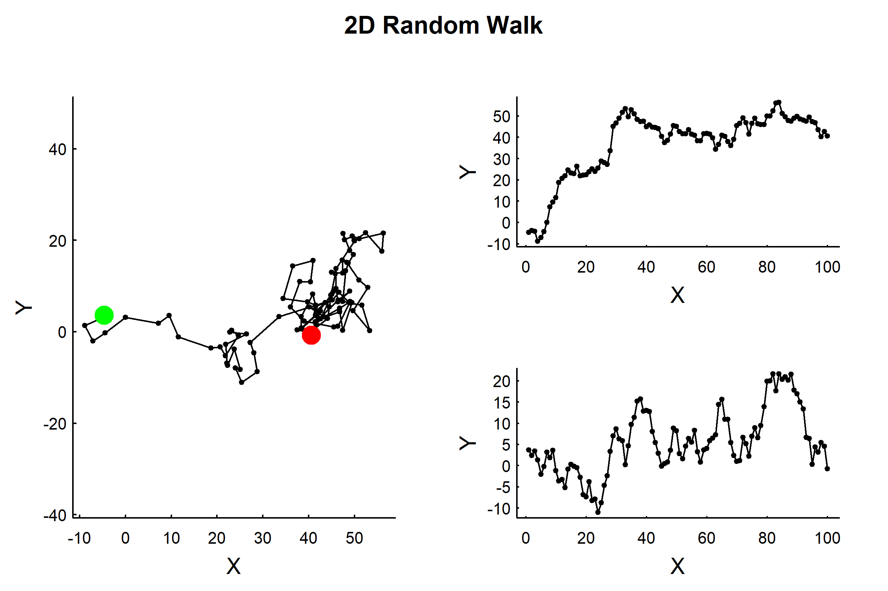
The properties of 2D Random Walk Let’s examine the step lengths and turning angles:
reveal code
# Calculate stepsS<-diff(Z)step_lengths<-Mod(S)turning_angles<-diff(Arg(S))# Plot step length distributionpar(mfrow =c(1, 2))hist(step_lengths/sigma, breaks =20, freq =FALSE, main ="Step Length Distribution", xlab ="Step length / σ", col ="lightblue", border ="darkgrey")curve(chi::dchi(x, df =2), add =TRUE, col ="red", lwd =2)legend("topright", "Chi(k=2)", col ="red", lwd =2)# Plot turning angle distributionrose.diag(turning_angles, bins =24, prop =2, col ="lightblue", border ="darkgrey", main ="Turning Angle Distribution")
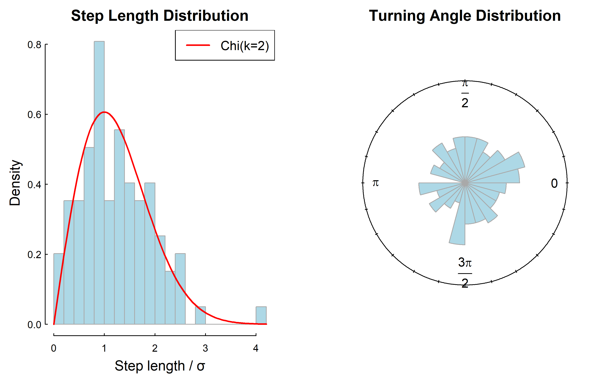
Key properties: - Turning angles are uniformly distributed: \(\theta \sim \text{Unif}(-\pi, \pi)\) - Step lengths follow a Chi distribution with k=2 - Expected step length: \(E(|S|) = \sqrt{2}\sigma\)
12.2.5 1D Autoregressive Process (AR)
Unlike random walks that wander to infinity, autoregressive processes are spatially constrained.
\[X_t = \phi X_{t-1} + \sigma W_t\]
where \(\phi\) is the autocorrelation parameter (0 < \(\phi\) < 1).
reveal code
# Function to simulate 1D AR processAR1D<-function(n=100, sigma=2, phi=0.8, mu=0){X<-numeric(n)X[1]<-rnorm(1, 0, sigma)for(iin2:n){X[i]<-phi*X[i-1]+rnorm(1, 0, sigma)}X+mu}# Simulatesigma<-2phi<-0.8n<-100X<-AR1D(n, sigma, phi)# Visualizepars()plot(1:length(X), X, type ="o", xlab ="Time", ylab ="Position", main =paste("1D AR Process (φ =", phi, ")"), pch =19, cex =0.5)abline(h =0, lty =2, col ="grey")
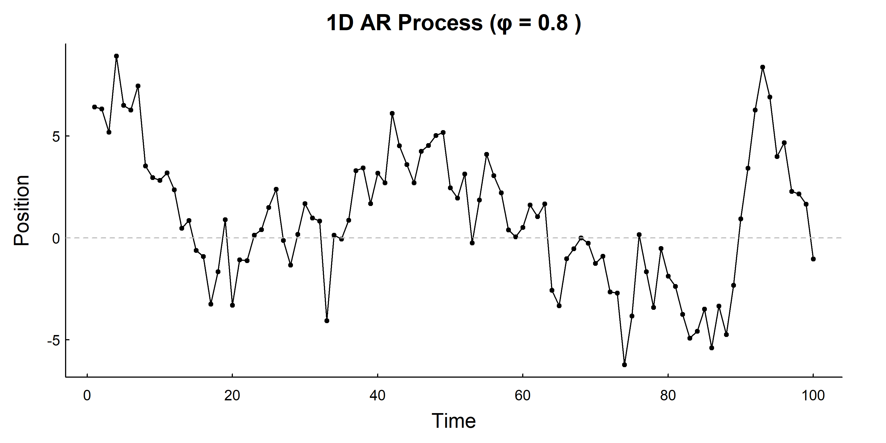
Properties: - Expected position: \(E(X_t) = 0\) (or \(\mu\) if shifted) - Variance: \(\text{Var}(X_t) = \frac{\sigma^2}{1-\phi^2}\) (spatially constrained!) - The autocorrelation parameter \(\phi\) controls how strongly positions are correlated
# Function to simulate 2D AR processAR2D<-function(n=100, phi=0.8, sigma=1, mu=0){X<-AR1D(n, sigma, phi, Re(mu))Y<-AR1D(n, sigma, phi, Im(mu))X+1i*Y}# SimulateZ<-AR2D(n =200, phi =0.8, sigma =3, mu =10+1i*5)# Visualizescantrack(Z)title("2D AR Process", outer =TRUE)
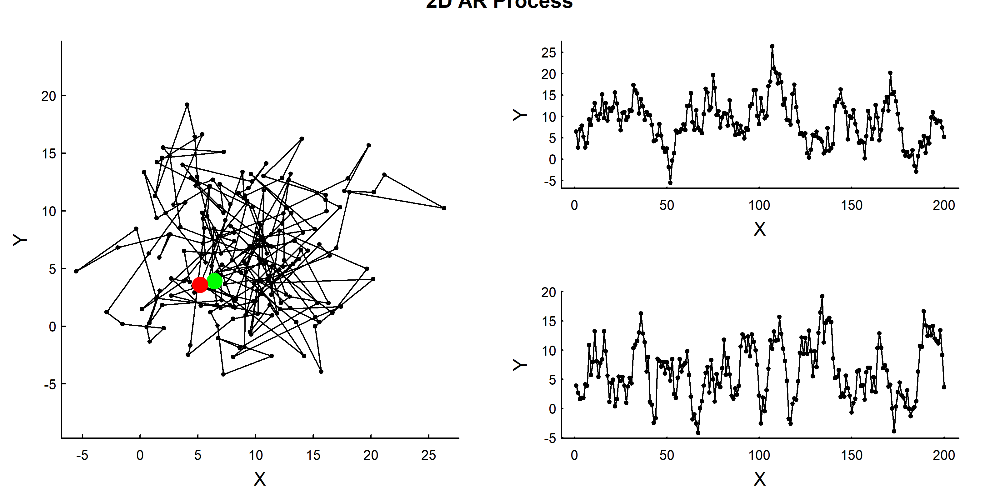
This looks like (very basic) home-ranging behavior! The animal stays within a boundd area. We can compute the theoretical 95% home ranging area of this process as:
\[A \approx \frac{6\pi\sigma^2}{1-\phi^2}\]
where 6 ≈ -2 log(0.05). Thus, for example, with \(\sigma = 3\) and \(\phi = 0\) (i.e. for a white noise), the 95% ranging area is around 170, while for an autocorrelation of \(\phi = 0.8\) it leaps up to 470. More importantly, you can easily invert the parameterization of this model and define it as a \(AR_{2D}(A, \phi)\), which is then parameterized in terms of
Note that The AR process is autocorrelatied in locations but NOT in the steps:
reveal code
acf(Re(Z), main ="Autocorrelation in Locations", lag.max =50)acf(Re(diff(Z)), main ="Autocorrelation in Steps", lag.max =50)
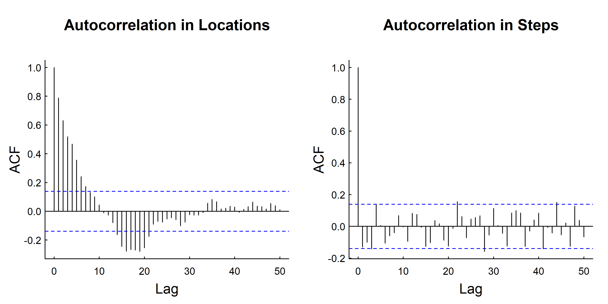
12.3 Correlated Random Walk (CRW)
“Correlated random walk” is the name given by Kareiva and Shigesada (1983) to a process in which discrete steps - in their case, the displacements of the cabbage white butterfly (Pieris rapae, figure Figure 12.1) between flowers, and of the pipe-vine swallowtail (Battus philenor) catterpillar crawling in a field and tagged with flags every 2 minutes. Essentially, the authors found that there is some persistence in the orientation of the discrete steps, modelled that persistence with a “clustered” turning angle distribution, and went on to analyze the rate of “diffusivity” of the resulting process.
It bears noting that while Kareiva and Shigesada (1983) coined the term and acronym CRW, and provided a nice foundataional piece of analysis to go with it, this model was studied extremely exhaustively in a pair of papers from the 1950s by Patlak (1953a), Patlak (1953b). In these largely forgotten papers the effect of various forms of correlation and anisotropy in individual movement steps are related to diffusion approximations, with explicit derivations of expected displacements and rigorous tests for external orientation. Patlak considers a discretization of movement that consists of step lengths l, the turning angles \(\theta\) and time intervals \(t\) drawn from some arbitrary distributions and predicted the displacements and theoretical rates of diffusion for such movers in terms of the mean and variance or step lengths, the mean cosine of turning angles, and the mean time interval. The analysis was exhaustive, but too far ahead of the data to be applied in any meaningful way.
In a Correlated Random Walk, turning angles are autocorrelated, creating directional persistence.
reveal code
# Function to simulate CRWCRW<-function(n=100, rho=0.8, alpha=1, beta=2){# rho: concentration parameter for wrapped Cauchy (0 = uniform, 1 = no turning)# alpha, beta: Weibull parameters for step lengththeta<-rwrappedcauchy(n, rho =rho)# turning anglesphi<-cumsum(theta)# absolute directionsstep_lengths<-rweibull(n, shape =alpha, scale =beta)S<-complex(arg =phi, modulus =step_lengths)cumsum(S)}# Simulate CRWZ<-CRW(n =200, rho =0.8, alpha =1, beta =2)# Visualizescantrack(Z)title("Correlated Random Walk", outer =TRUE)
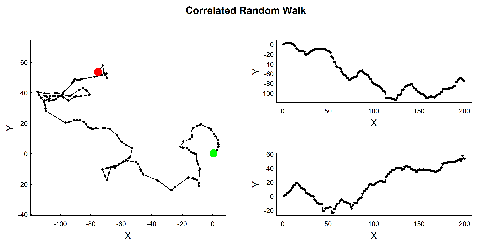
12.3.1 CRW Properties
reveal code
# The CRW also shows autocorrelation in positionacf(Re(Z), main ="Autocorrelation in Positions")# But NOT in the stepsacf(Re(diff(Z)), main ="Autocorrelation in Steps")
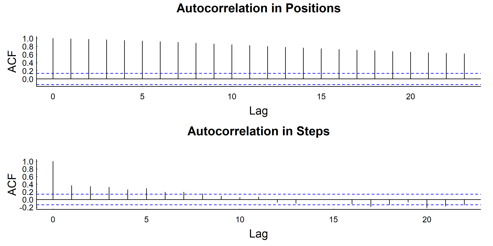
13 Multi-state Random Walk
Animals often switch between behavioral states (e.g., resting, foraging, traveling). We can model this using a Multi-state Random Walk where movement parameters depend on the behavioral state.
13.1 Markov Chains for State Transitions
First, we need to understand how to model state transitions using Markov chains. A Markov chain describes transitions between discrete states with fixed probabilities. We represent this with a transition probability matrix where element \(M_{ij}\) is the probability of transitioning from state \(i\) to state \(j\). The matrix has the structure:
This says: the probability of being in state \(j\) at time \(t+1\) equals the sum over all states \(i\) of the probability of being in state \(i\) at time \(t\) times the probability of transitioning from \(i\) to \(j\).
Example: If we start with certainty in state 1, i.e., \(\boldsymbol{\pi}_0 = [1, 0, 0]\):
After one step, there’s a 70% chance of being in state 1, 20% in state 2, and 10% in state 3.
13.2 Simulating a Markov Chain
First, we specify the transition matrix. We’ll have 3 states, which we call “chilling” (state 1), “cruising” (state 2), and “huffing” (state 3), with the same matrix we described above.
reveal code
M<-rbind(c(0.7, 0.2, 0.1), # From chillingc(0.4, 0.4, 0.2), # From cruising c(0.0, 0.8, 0.2)# From huffing)rownames(M)<-colnames(M)<-c("chilling", "cruising", "huffing")M
To simulate a sequence of states, at each time step you have to “sample” the transition probabilities for the fiven state. If you’re in staet 1, you sample from the first row of the matrix with the appropriate probabilities, if in row 2, you sample from the second row, etc:
reveal code
n<-400states<-1:3State_mc<-rep(NA, n)# empty simulation vectorState_mc[1]<-1# Start in "chilling" statefor(iin2:n){State_mc[i]<-sample(states, size =1, prob =M[State_mc[i-1], ])}# Show first 100 statesState_mc[1:100]
The stationary distribution tells us the long-run proportion of time in each state. Empirically you just count percentages of time spent in each state:
Mathematically, you can compute it directly from the transition probability using the “eigenvalue theorem” (see, e.g., this link). Long-story short, almost every square matrix is associated with a magic vector - the eigenvector\(({\bf v})\) and a magic number - the eigenvalue (\(\lambda\)) that satisfies the equation:
\[M \times {\bf v} = \lambda \times{\bf v}\]
which means: there is a set of numbers (e.g. a set of probabilities of being in a behavioral state), that - when you multiply the matrix magic to it - gives you the same vector, just multiplied by a factor.
13.4 Simulate Multi-state Random Walk
Now we’ll create a full multi-state random walk where movement parameters depend on the behavioral state.
reveal code
# Movement parameters for each state# State 1 (chilling): no persistence, small steps# State 2 (cruising): medium persistence, medium steps # State 3 (huffing): high persistence, large stepsrhos<-c(0, 0.5, 0.9)# turning angle concentrationalphas<-c(1, 2, 5)# Weibull shape for step lengthbetas<-c(0.5, 3, 8)# Weibull scale for step length# Helper function for wrapped Cauchyrwc<-function(n, mu, rho){ifelse(rho==0, runif(length(rho==0), 0, 2*pi), rcauchy(n, mu, -log(rho))%%(2*pi))}# Simulate turning angles based on statethetas<-rwc(n, mu =0, rho =rhos[State_mc])# Simulate step lengths based on statestep_lengths<-rweibull(n, shape =alphas[State_mc], scale =betas[State_mc])# Create movement pathS<-complex(arg =cumsum(thetas), modulus =step_lengths)Z<-cumsum(S)
Visualize the multi-state random walk:
reveal code
## pars()cols<-c("darkblue", "green", "orange")plot(Z, type ="l", col ="darkgrey", asp =1, lwd =2, main ="Multi-state Random Walk", xlab ="X", ylab ="Y")points(Z, col =cols[State_mc], pch =19)legend("topright", legend =rownames(M), col =cols, pch =19)
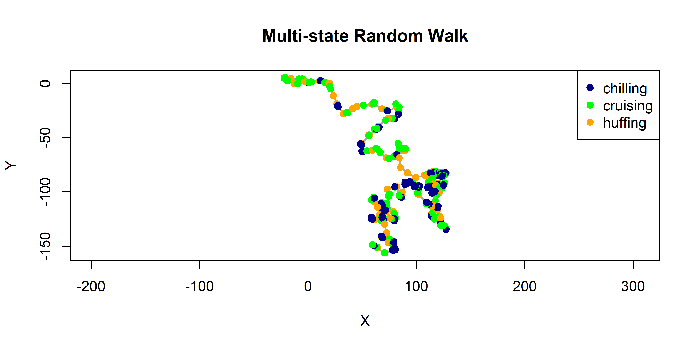
13.5 Visualize State Sequence
reveal code
pars()par(mar =c(3, 4, 2, 1))plot(1:n, State_mc, type ="l", lwd =2, col ="grey", xlab ="Time", ylab ="State", yaxt ="n", main ="State Sequence Over Time")points(1:n, State_mc, col =cols[State_mc], pch =19)axis(2, at =1:3, labels =rownames(M), las =1)
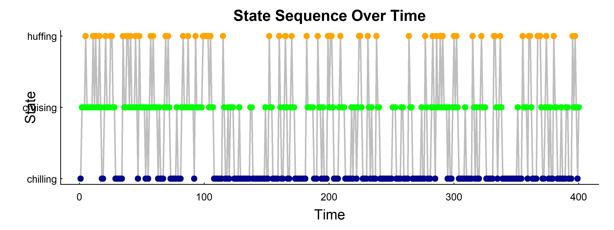
13.6 Compare Movement Parameters Across States
reveal code
boxplot(step_lengths~State_mc, col =cols, xlab ="State", ylab ="Step Length", names =rownames(M), main ="Step Lengths by State")
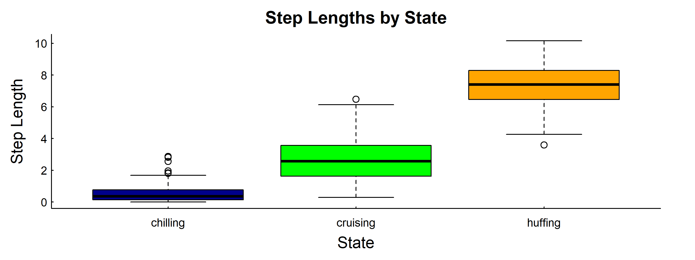
Note how I use a loop for the turning angles
reveal code
require(circular)for(iin1:3)rose.diag(thetas[State_mc==i], bins =16, col =cols[i], prop =1.5, main =rownames(M)[i])
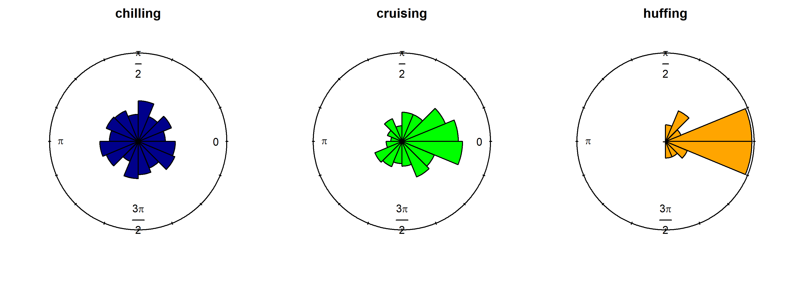
13.7 Some exercises
Random Walk Exploration: Simulate 1D and 2D random walks with different \(\sigma\) values. How does step size affect the area covered?
AR Process Behavior: Try different values of \(\phi\) (e.g., 0.3, 0.6, 0.9). How does this affect the home range size? Verify the home range formula.
CRW Persistence: Modify the rho parameter in the CRW. What happens when rho = 0 (no directional persistence) vs rho = 0.95 (high persistence)?
Multi-state Customization: Create your own transition matrix and movement parameters. Try modeling different behaviors like:
Migration (directional state with long steps)
Foraging (slow, tortuous movement)
Resting (minimal movement)
State Duration: Calculate the average duration animals spend in each state. Hint: Look at run lengths of consecutive states.
13.8 References
Kareiva, P. M., and N. Shigesada. 1983. “Analyzing Insect Movement as a Correlated Random Walk.”Oecologia 56: 234–38. https://doi.org/10.1007/BF00379695.
Patlak, C. S. 1953a. “A Mathematical Contribution to the Study of Orientation of Organisms.”Bulletin of Mathematical Biophysics 15: 431–76. https://doi.org/10.1007/BF02476435.
———. 1953b. “Random Walk with Persistence and External Bias.”Bulletin of Mathematical Biophysics 15: 311–38.